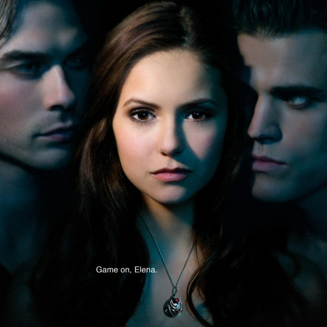

S É R I E S - M A N I A
|  | GÊNERO | Drama, Sobrenatural |
|---|---|---|
| STATUS | Renovada | |
| ESTRÉIA | BRA 11/06/2009 | |
The Vampire Diaries ('Diários de um Vampiro' (título no Brasil)) é uma série de televisão americana de drama e suspense desenvolvida por Kevin Williamson e Julie Plec e baseada na série de livros de mesmo nome escrita por L. J. Smith. A série estreou na televisão americana pela emissora The CW em 10 de setembro de 2009, a segunda temporada em 9 de setembro de 2010 e a terceira em 15 de setembro de 2011.
Em 3 de maio de 2012 foi anunciado pela The CW a renovação da série para uma quarta temporada, que se iniciou no mesmo ano em 11 de outubro. Foi anunciado que a série terá uma quinta temporada. A série segue os eventos na cidade de Mystic Falls, Virginia. Uma pequena cidade fictícia assombrada por seres sobrenaturais. O foco principal da série é o triângulo amoroso entre a protagonista, Elena Gilbert (Nina Dobrev) e os irmãos, Stefan (Paul Wesley) e Damon Salvatore (Ian Somerhalder). Os dois tem um passado sombrio. Mais tarde, a luz é lançada sobre o misterioso passado da cidade, envolvendo a ancestral de Elena, Katherine, e a família original, que deram origem aos vampiros.